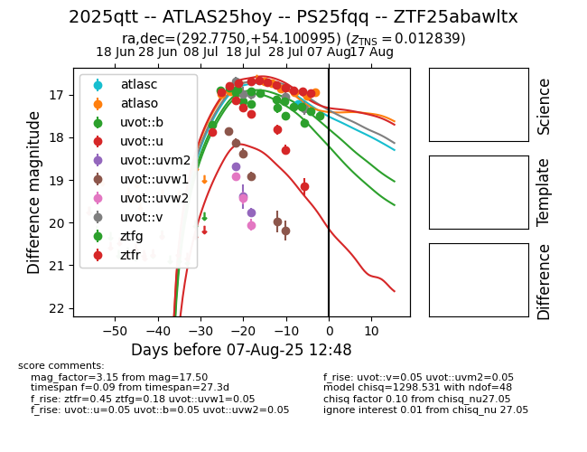

Target 2025qtt at 2025-08-09 08:33, see:
FINK: fink-portal.org/2025qtt
Lasair: lasair-ztf.lsst.ac.uk/objects/2025qtt
ALeRCE: alerce.online/object/2025qtt
TNS: wis-tns.org/object/2025qtt
YSE: ziggy.ucolick.org/yse/transient_detail/2025qtt
alt names
ZTF25abawltx (ztf,fink)
2025qtt (tns,yse)
ATLAS25hoy (atlas)
PS25fqq (panstarrs)
coordinates:
equatorial (ra, dec) = (292.7750,+54.10099)
galactic (l, b) = (85.9490,+16.23093)
photometry
last atlasc=17.22, atlaso=17.02, uvot::b=18.16, uvot::u=19.15, uvot::uvm2=19.76, uvot::uvw1=20.18, uvot::uvw2=20.05, uvot::v=17.44, ztfg=17.58, ztfr=17.03
1 atlasc, 11 atlaso, 7 uvot::b, 6 uvot::u, 3 uvot::uvm2, 6 uvot::uvw1, 3 uvot::uvw2, 6 uvot::v, 13 ztfg, 13 ztfr detections
